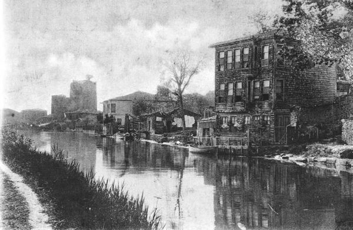

Evvel zaman içinde, kalbur saman içinde Göksu, İstanbul’un yüzsuyu idi. Eski ve kıymet bilen âli ve ahali orayı çok severlerdi. Orayı sık sık ziyaret ile oralarda zevk ü sefa ile istirahat ederlerdi. Arabalarla kayıklarla gelerek, derenin etrafındaki çayırlara serilirler; yemek yerler; yatarlar, kalkarlar; istirahat eder, eğlenirlerdi. Evet... O zaman Göksü ve Küçüksu bir içim su gibi aziz ve mergub idi[116] ve o âb-ı hayat gibi bir nehirdi.
Göksu’nun suyu Alemdağı’ndan akar gelir. İki tarafı yüksek ağaçlarla müzeyyendir, bağları vardır. Bahçeleri ve yeldeğirmenleri vardır. Hülasa orada her nevi zevk ve güzellik vardır, derlerdi. Zamanın padişahları bu mevkie itibar ederlerdi. Saraya gelir otururlar; çayıra çıkar at oynatırlar; cirit oynar, oynatırlardı. Ok talimleri yaparlardı.
Bugünkü Göksu Sarayı’nın yerinde ahşap bir köşk vardı ve bu bina en güzel yapılardan biriydi. III. Selim’dir ki bu kasrı yeniden tamir ettirmişti. Bu padişahın saye-i nezaretinde feyz alan II. Mahmud’un da bu köşke hüsnü nazarı ve hizmeti sebk etmişti. Fakat bu kasrı bugünkü haline koyan Sultan Abdülmecid idi.
1856’da saray bugünkü şeklini almıştı ve sonra Sultan Abdülaziz tarafından da yaptırılan bazı tadilat ile bir kat daha güzelleştirilmişti.

Asya Tatlı Suları
III. Sultan Selim’in gündüzleri bu sarayda yemeğini yiyip, mehtaplı gecelerde Boğaz’da dolaştığı da vaki idi. Gözdesi Mihriban Hatun’un ona verdiği heyecanların ilhamları Boğaziçi’nin mehtaplı gecelerinde padişahı daha çok hassas eder; ibda ettiği (ortaya çıkardığı) nefis musiki eserleri, sular gibi akar giderdi. II. Sultan Abdülhamid zamanında yani benim doğduğum ve yetiştiğim zaman içinde Göksu ve Küçüksu yine rağbette idiyse de bu rağbet derecesini indirmiş, eski vakarını muhafaza edememişti. Mamafih büsbütün pabucu da dama atılmış değildi. Gerçi padişah, sultanlar ve şehzadeler gelmiyordu; nâzır paşalar ve emsali zatlar devam edemiyorlardı; amma yüksek tabaka yine vefasızlık göstermiyor; derede ve çayırlarda gözüküyorlardı. Yalnız ecnebiler istiflerini bozmamışlar, muntazaman bu yeri ziyarette inat etmişlerdir. Büyükelçiler, elçiler, aileleri veya İstanbul’da oturan veya İstanbul’dan geçen ecnebiler Göksü Deresi’nden de mutlaka geçer gider; fakat yine döner gelirlerdi. Boğaziçi’nde ikamet eden devlet ricalinden zevk ehli olanlar da bu yeri unutmamışlardı. Hele Çarşamba günleri –bilmiyorum neden- dereyi doldurmuşlardı. Etrafında modern müesseseler olduğu muntazam imkânlar bulunduğu temiz bir kahvehaneye sahip olduğu için mi? Hayır. Sadece tabiî güzellikleriyle kaldığı için Göksu’yu ve Küçüksu’yu doldururlardı.
Bir ağustos mehtabı gecesinde idi. Hatırımda yanlış kalmamışsa eğer, Sadrazam Kadri Paşazade İsmail Cenanî Bey’in tertip ettiği bir saz âleminde, emsalsiz olduğu için fevkalade olarak içinde toplanan sazende ve hanendelerle beraber dereye giriveren büyük pazar kayığını takip ile kayıklar ve sandallar o kadar sıkışmışlardı ki, birbirlerine yapışıp geri geri yürüyerek dereden çıkabilmişlerdi. Bu da vardı: O zamanki hamlacılar cidden mahir idiler.
Aile dostumuz Tanburî Nasır Bey ve yine Tanburî Vasilaki Efendi vardı. Udî İbrahim ve bu ayarda üstatlar vardı. Koca Boğaziçi dalgacıklarının sedacıklarıyla bu âleme güya iştirak ediyordu. Gençlik bu ya; ben bu âlemlerde ferafeş-i emvacı yani suların fışfışlarını çok severdim. Aile dostumuz Beylikçi Nasır Bey mehtaplı gecelerde Bebek’teki yalımızın sahile nazır pencerelerinden bize Göksü Sarayı’nı gösterir, “İşte çocuklar! Pırlanta da böyle parlar” derdi. Dikkat ediniz Nâsır Bey merhumun hakkı vardı. Cenab-ı Hüda cümlesine rahmet eyleye ve Göksu’muzu ve sarayımızı muammer eylesin.
Son Saat, 31 Ocak 1955